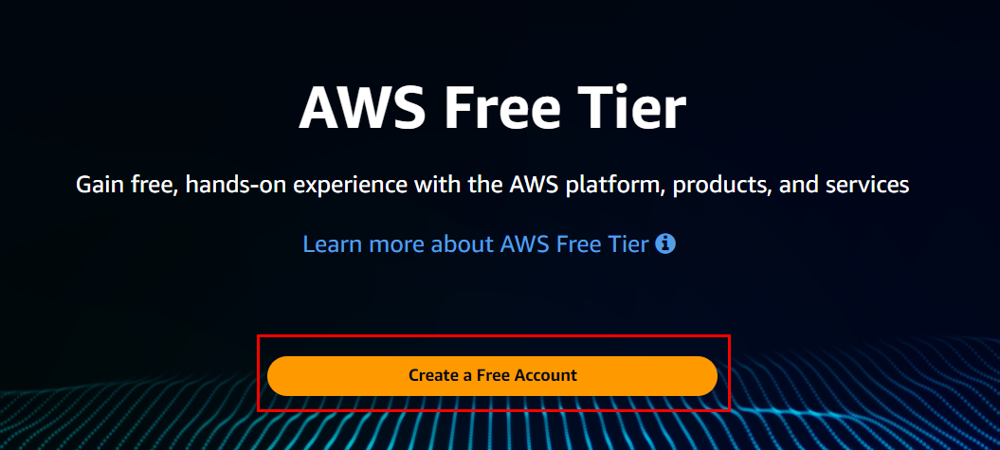
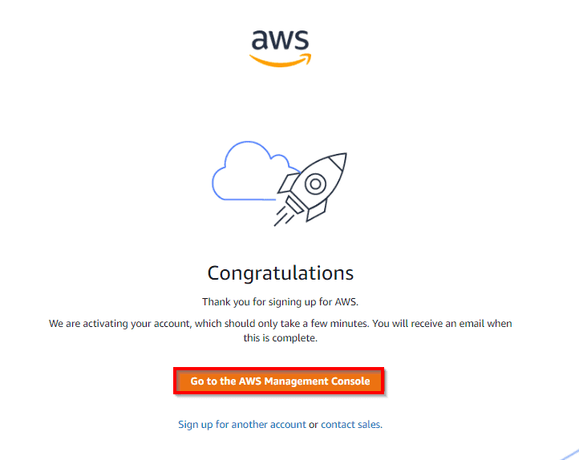

Create AWS Account
Introduction
Welcome to the "Mastering AWS DevOps" series! As you explore Chapter 1, "Setting Up Your AWS Account," this blog post will guide you through the essential steps of creating your own AWS account. Establishing a well-configured AWS account is the first important step in your DevOps journey, as it forms the foundation for all subsequent activities in the AWS environment.
In this blog, you will learn:
- Creating an AWS Account: How to register a new AWS account with step-by-step instructions.
- Entering Your Account Details: Providing essential information and verifying your email address.
- Filling Out Contact Information: Specifying whether the account is personal or professional and ensuring accurate details.
- Setting Up Payment Information: Inputting your credit or debit card details for account verification.
- Validating Payment: Understanding the small test charge process for card verification.
- Phone Verification: Verifying your identity with a code sent to your phone.
- Choosing a Support Plan: Selecting a support plan that fits your needs.
- Account Activation: Completing the setup and understanding the activation timeline.
You can watch this in the video below:
Step-by-Step Guide
Step 1: Opening Up AWS
Start by opening your web browser and going to the AWS Free Tier page. It's like unlocking the door to your cloud adventure.
Step 2: Creating Your Account
Hit that "Create a Free Account" button in the middle of the page. It's like saying "Let's do this!" to AWS.
Step 3: Your Account Details
Here's where you tell AWS who you are. Fill in your email address (make sure it's not already used for Amazon AWS), create a password, and give your account a name. This is like giving your account a cool nickname. After that, you will get a verification code in your email which you have provided.

Step 4: Contact Info
Let AWS know if you're going for a personal or professional account. Fill in your info, agree to the rules, and hit "Create Account." Just make sure your phone number and email are right, so you can get a secret code later.

Step 5: Payment Info
Don't worry, you won't be charged right away. This is just to verify you're a real person. Put in your credit or debit card info and billing address, and click "Secure Submit."

Step 6: Payment Validation
AWS will do a quick test charge, but it's just a tiny amount. It's like checking to see if your card works. They charged me 2 INR (Indian Rupees).

Step 7: Phone Check
AWS will send you a code to your phone. You can choose to get it as a text message or a phone call. Type in the code and hit "Verify Code."


Step 8: Picking a Support Plan
Here, you choose a plan that suits your needs. It's like picking the level of help you want along the way. Once you've decided, click "Continue."

Step 9: Welcome to AWS
Just like that, you're almost done! Once you've completed all the steps, you'll see a confirmation page. AWS will take a bit of time (maybe 30 minutes to an hour) to activate your account.
Congratulations! You've created your AWS Free Tier Account. Get ready to explore and learn all sorts of cloud magic.
Conclusion
And that's it! See, creating an AWS Free Tier Account is as simple as following a recipe. You're now part of the AWS cloud adventure. With your AWS account ready, you're now set to explore the vast array of AWS services and make your mark in the cloud domain!
Share this post: